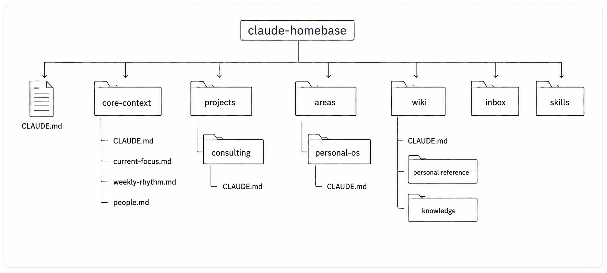
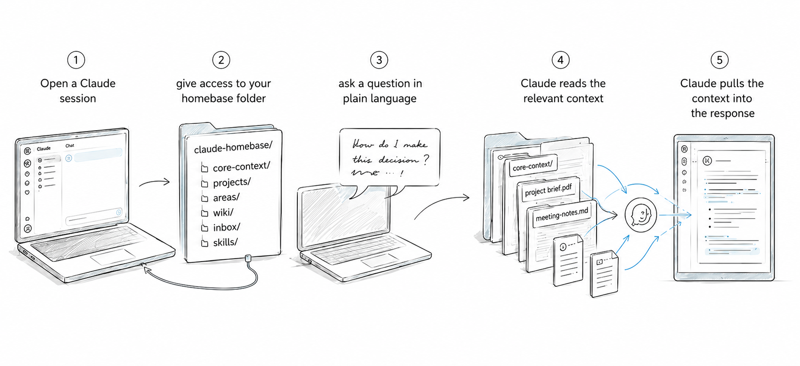
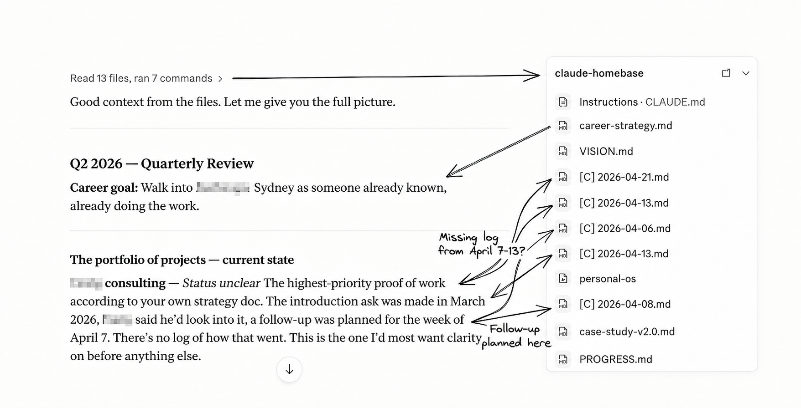
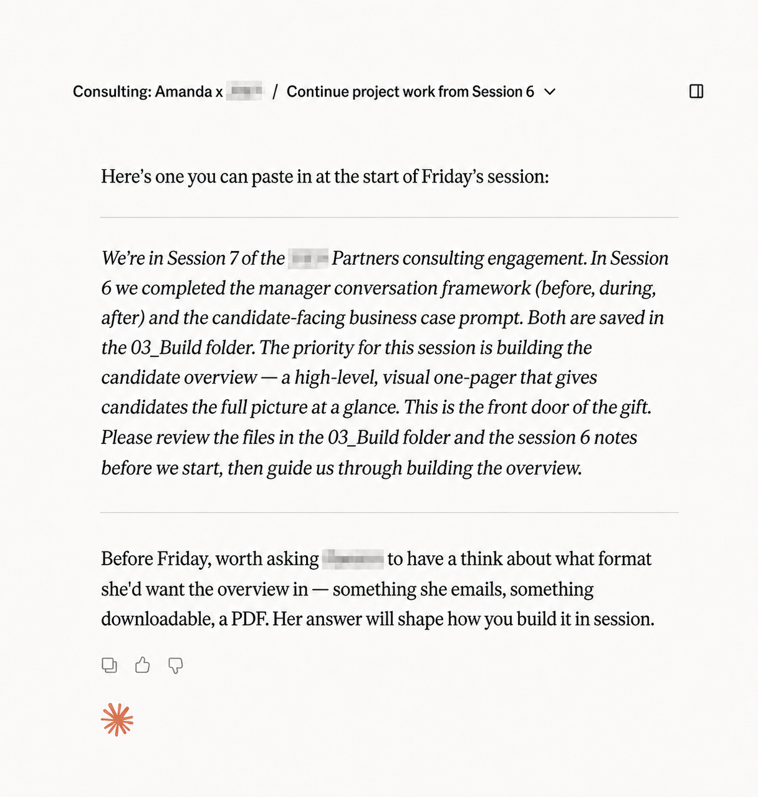
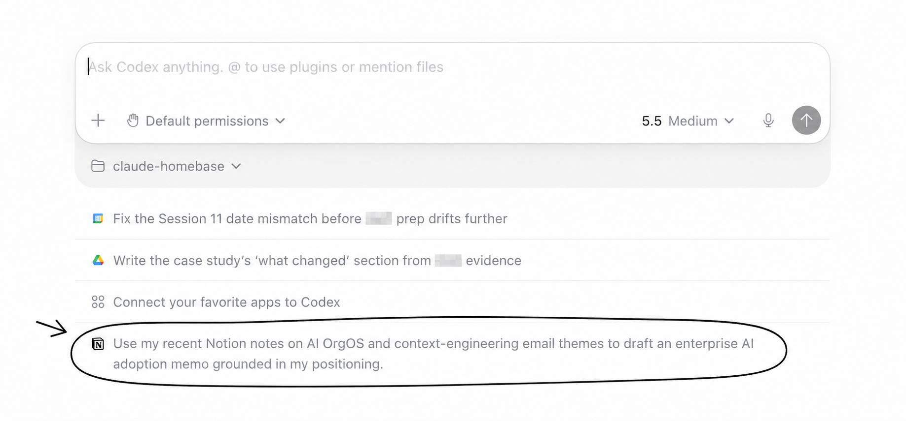
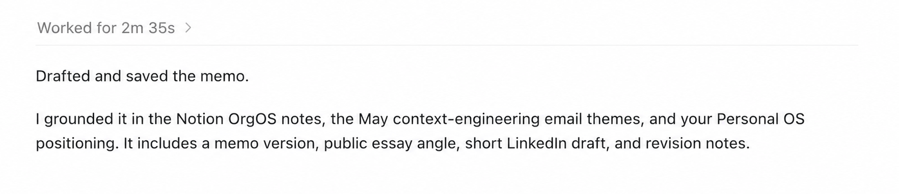

What started as local folder cleanup turned into a complete rethink of how I work. The result is a personal operating system: a structured, file-based workspace that gives Claude a persistent map of my projects, priorities and knowledge. In building it, I also ended up with a much clearer view of what AI actually needs to be useful in , which, as it turns out, is not just more data.
One of the core problems I set out to solve with my personal OS was context repetition: having to explain the same background and priorities at the start of every session.
I started using Claude Cowork in February and was running several projects all aimed at achieving a single, overarching goal: land a job at an AI Lab. Sometimes I wanted Claude to stay tightly inside a single project. The solution for this was simple: give Claude access to the local project folder.
But when I wanted Claude to understand how all these projects fit together, things weren't so straightforward. I couldn't have a meaningful conversation about strategy because the context was scattered across half a dozen folders that Claude couldn't see at the same time.
My first instinct was to solve this by giving Claude everything, but I soon learned that access to everything was only half the solution. And an expensive one at that, both in terms of output quality and, of course, token spend. And since I didn't want to upgrade my $20 subscription, I had to figure out how to make the right amount of context available at the right time.
I built a structured set of folders and plain-text files organised so Claude can find the right parts of my life and work when needed. This is the basic structure:

This structure came from thinking about my life like a business: me as director, Claude as my business partner. The business has departments and processes that serve a common goal; it even has its own mailbox and knowledge base.
A quick tour:
core-context
The operating context: priorities, values, key people, and the structure of my work and week.
projects and areas
Where the work gets done: plans, drafts, work logs and workspace-specific instructions. Projects are time-bound; areas are ongoing.
inbox
The pigeonhole: for dropping new inputs like articles, screenshots and notes before they get processed into the right place.
wiki
The knowledge base: personal reference material and distilled notes on things I'm learning.
skills
Reusable workflows for recurring jobs: planning my day, producing cross-project status briefings, and assessing how I communicated in an important conversation.
The structure is a mix of ideas I picked up from people building similar systems — second brains, LLM wikis, team operating systems — repurposed around my own life and the way I actually work.
A huge part of the system is the orientation layer: plain-text files that sit at the root and inside key folders that tell Claude what the workspace is for, how to work with me and how to find its way around. These files are essential because my business partner is smart, helpful and extremely forgetful. Every new session starts close to zero, so the system has to re-establish context quickly and economically.

In practice this means that I can ask short, simple questions and still get useful responses back. Below are two quick examples.
Example 01:I wanted a clear picture of how the projects connected to my career strategy were actually tracking. This was the first time I'd asked Claude to do this — I hadn't packaged it into a skill yet. It was also the biggest system test so far, and Claude pulled it off.

Claude pulled from the project folders, recent work logs, and my core-context files to name each project, describe where it stood, refer to the last time I'd worked on it, and place it back inside the larger strategy.
That was the first proof that the system was doing what I needed it to.
Example 02:I was working with a former colleague on an AI proof of concept. The problem: it was a side project and we were only meeting once a week. This meant we'd consistently lose the first 15 minutes of each session trying to remember where we left off.
So I changed how we wrapped up our sessions by asking Claude to write a summary, work log, and prompt for the next one.

Because Claude had the project context, work log and broader strategic context around the project, the next session started with the right details and a clear next step. No more 15-minute warm-up.
That same trail helped again at the end of the project. I needed to hand over both the assets we'd built, and the method behind them. Instead of reconstructing the process from notes and memory, I asked Claude to assemble it from the project record.
The system emerged one practical decision at a time rather than from some master plan. One of its advantages is that it isn't tied to Claude: any agent that can read local files can work with it.
These are short instruction files placed at the root and inside key folders. They tell Claude what lives in each part of the workspace, what matters there, and where to go next. The root file works like a company handbook; nested ones are more like department briefs. Instead of hoping an AI assistant will infer the structure, I make it explicit.
Backup, version control, and cross-device access were the obvious wins. Just as important, it let me keep the files local, where any AI tool can access them directly instead of relying on a specific app or integration. The unexpected bonus was that repository commits became a kind of running memory of what happens each day, which now supports end-of-day reports and planning.
Most of my files used to live in Google Docs, Notion, or spreadsheets, which often require APIs or export steps before AI can read them cleanly. Markdown is simple, durable, and immediately legible to both me and the model. There's no translation layer between what I write and what Claude sees.
Source documents I didn't create — PDFs, shared spreadsheets, reference material — stay in the cloud. Not everything needs to live in the same place to be part of the same system; Claude knows it's there and can access files as and when needed.
My phone doesn't talk to the system. This is the biggest operational gap at the moment. GitHub helps with versioning and sync, but it doesn't solve the capture problem. Notes, articles and screenshots often appear on my phone first, and getting them into the workspace still takes too much manual effort.
Loose tasks have nowhere to go. If something occurs to me that doesn't belong to a current project, I don't yet have a good home for it. I tried keeping a backlog in Notion, but it quickly turned into a parking lot rather than a working system.
Blind spots. The system depends heavily on session-to-session continuity, but projects don't always unfold that neatly. So far that hasn't caused an obvious failure, but I'm not fully confident that I haven't missed something either.
The more I used this system, the more it started to feel relevant beyond personal productivity. The same underlying problem shows up in businesses too: useful AI depends on usable context, clean information, and workflows people will actually adopt. That's part of why I later built a proof of concept for my former boss. I wanted him to experience what AI could do inside his own business, not just hear a pitch about it.
I didn't start by building an organisation-level version, partly because I was still testing my own system and partly because I wasn't yet sure how well the approach would translate to a company setting. It raised questions I didn't have to solve for myself. For example:
My former boss and his team are also non-technical, which means they'd likely face some of the same adoption friction I did. The system can't just work: it has to work for the people using it.
Just as I finished writing this, the system gave me one last proof point.
I opened a new Codex session and before I'd typed anything saw a prompt suggestion about enterprise AI adoption, a theme spread across my priorities, projects, meeting notes and connected tools.

Codex surfaced a pattern from context I had already put in place, not just from inside my local files, but from across my connected tools. And I didn't even have to prompt.

So why did Codex include a public essay angle and short LinkedIn draft in the memo? Because it knows that I'm actively writing on LinkedIn and Substack as a part of my career strategy, a markdown file that sits inside my core-context folder.
I never imagined that cleaning up my folders would end in creating an entirely new infrastructure, learning GitHub, working in markdown, and even creating this html file that you'r reading now (with Claude's help of course). What I originally felt was a distraction turned out to be one of the most important things in my AI learning so far.